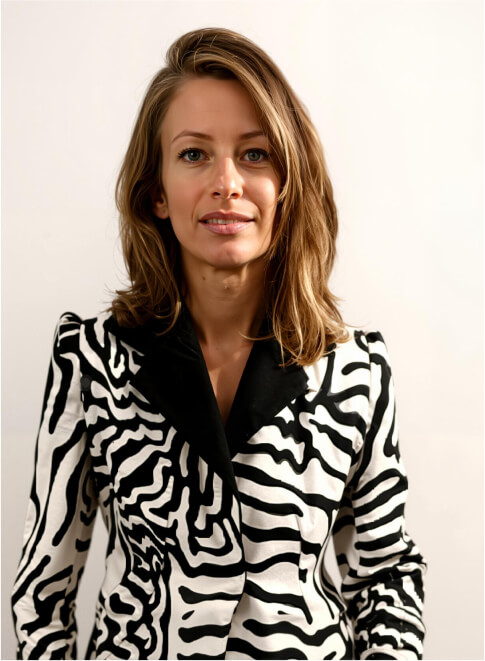

About Us
- About dayang
- Footprints
- Core capabilities
- International Creative Team
About dayang
Setting industry benchmarks with craftsmanship and innovation
Dayang Group Co., Ltd. was established in September 1979 and is one of the most internationally competitive men's clothing enterprises in China. The group has 24 subsidiaries with an annual production capacity of over ten million sets of suits
Dayang Group is renowned in the industry for its "highest quality men's clothing made in China" and has successfully developed an intelligent ordering platform to serve global customers. Its professional men's clothing manufacturing technology has been widely recognized internationally

Our products are exported to more than 20 countries and regions including the United States, Canada, the Netherlands, the United Kingdom, Germany, Italy, Japan, South Korea, Australia, etc., and enjoy a high reputation in the industry, becoming the largest men's clothing export enterprise in China.
Footprints
Dayang Group, founded in 1979 in Dalian, evolved from garment production to a global menswear leader, launching "TRANDS" brand in the 1990s and pioneering smart manufacturing in the 21st century.
-
2024
Achieved 20M+ cumulative RTW units for Aoyama; international design & marketing team debuted at fashion show. -
2022
Reached 1M cumulative MTM units for Indochino. -
2018
Partnered with Institchu (the MTM industry leader in Australia) and Global Style (a dominant force in Japanese MTM sector) -
2016
Signed strategic agreement with Indochino (world's largest MTM retailer). -
2010
Launched T-BY-TRANDS MTM project in the US. -
2009
Chairwoman Li Guilian featured on CNN. -
2007
Warren Buffett became a loyal TRANDS customer. -
2005
Partnered with Ivano Cattarin, ex-Armani Chief Designer. -
2000
China’s WTO accession boosted global trade. -
1979
Founded
Core Capabilities
A leader in MTM and RTW production, Dayang Group delivers brand-focused apparel through tech-driven factories, continuous innovation, and dedicated craftsmanship in both formal and casual wear.
International
Creative Team
"Bringing together top designers from Italy, the UK, Japan, and France, our international creative team merges diverse cultural perspectives with exceptional creativity to infuse the brand with global design language and innovative energy."
-

Creative Director & Fashion Designer(CD & FD)
Mauro Ravizza Krieger
Founded a 1998 fashion/accessories studio (clients including Maxmara); ex-Creative Director at Pal Zileri (2014–2017, led design strategies); spe-cializes in trend analysis, offering global brands professional design services.
-
Italian Pattern Making Expert
Belardo·Walter
Diplomas from Milano Secoli (Men'sWear) & Varese Porta; worked with Dolce & Gabbana, Zegna, Fendi; headed Falconeri menswear pattern making, specializing in luxury technical design
-

Apparel Tech Expert
Kurosaki
11yrs at Vilene (R&D, 600+ women's pieces); 22yrs at United Arrows (led tech: pattern to production, Tech Chief till Jan 2024, 6 brands upgrad-ed); certified Japanese textile QC & men's/women's craftsman
-

Men's Suit Technical Expert
Gerrica Giache
Began as Creazioni GEII'S Technical Di-rector Assistant; 25yrs as CANALI Men's Suits Technical Director. Spe-cializes in men's suit production, ex-celling in craftsmanship & technology to optimize quality/output